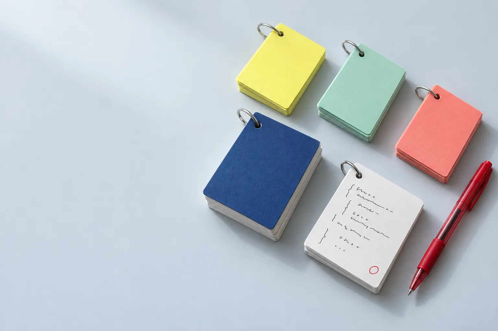

정보처리기사 실기
합격 대비 퀴즈
총 12개 과목, 130문제로 실기 시험을 완벽하게 준비하세요.
프로그래밍 출력 결과, SQL 쿼리, 네트워크/보안, 소프트웨어공학 등 핵심 영역을 모두 다룹니다.
과목별 퀴즈
문제를 손으로 풀고 카드를 넘겨 답을 확인한 뒤, 맞았는지 틀렸는지 표시하세요. 기록은 이 브라우저에만 저장됩니다.
코드 실행 결과 코드를 따라가며 출력 예측
SQL · 데이터베이스 쿼리 작성과 설계
이론 · 개념 용어와 원리 서술
합격을 위한 학습 팁
-
코드 실행 결과 문제
Java, Python, C언어 코드를 직접 손으로 트레이싱하면서 풀어보세요. 변수의 값 변화를 하나씩 추적하는 연습이 핵심입니다.
-
반복 학습
틀린 문제는 반드시 다시 풀어보세요. 해설을 꼼꼼히 읽고, 왜 틀렸는지 이해하는 것이 중요합니다.
-
용어 암기
신기술 용어, 네트워크 프로토콜, 소프트웨어공학 용어는 영문 약어와 함께 정확히 암기하세요.
-
시간 관리
실기 시험은 시간이 부족할 수 있습니다. 모의고사를 통해 시간 배분 연습을 해보세요.
-
서술형 대비
단답형뿐 아니라 서술형 문제도 출제됩니다. 개념을 자신의 말로 설명할 수 있도록 연습하세요.
-
기출 분석
최근 기출문제 경향을 파악하고, 자주 출제되는 유형을 집중적으로 학습하세요.